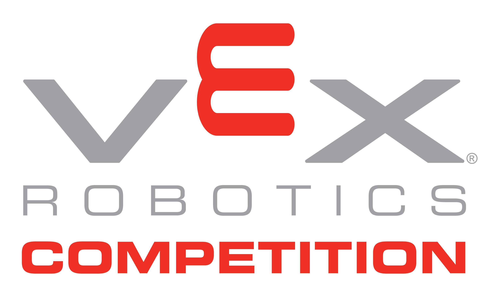

The Competition

In the VEX Robotics Competition, presented by the Robotics Education & Competition Foundation,
teams of students are tasked with designing and building a robot to play against other teams in
a game-based engineering challenge. Classroom STEM concepts are put to the test as students learn
lifelong skills in teamwork, leadership, communications, and more. Tournaments are held year-round
at the regional, state, and national levels and culminate at the VEX Robotics World Championship
each April!
Change Up
2020-2021 Game
VEX Robotics Competition Change Up is played on a 12’x12’ square field configured as seen below. Two
(2) Alliances - one (1) “red” and one (1) “blue” - composed of two (2) Teams each, compete in Matches
consisting of a fifteen second (0:15) Autonomous Period, followed by a one minute and forty-five
second (1:45) Driver Controlled Period.
The object of the game is to attain a higher score than the opposing Alliance by Scoring Balls and
Connecting Rows.